|
Integration by Parts and Natural Boundary Conditions |

  
|
|
Integration by Parts and Natural Boundary Conditions |
|
A fundamental technique applied by FlexPDE in treating the finite element equations is “integration by parts”, which reduces the order of a derivative integrand, and also leads immediately to a formulation of derivative boundary conditions for the PDE system.
In its usual form, integration by parts is given as
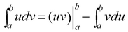.
Application of integration by parts to a vector divergence in a two- or three-dimensional domain, for example, results in the Divergence Theorem, given in 2D as
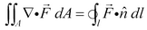.
This equation relates the integral inside the area to the flux crossing the outer boundary (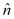referring to the outward surface-normal unit vector).
As we shall see, the use of integration by parts has a wide impact on the way FlexPDE interprets and solves PDE systems.
Applied to the weighted residual method, this process dictates the flux conservation characteristics of the finite element approximation at boundaries between the triangular approximation cells, and also provides a method for defining the interaction of the system with the outside world, by specifying the value of the surface integrand.
The values of the surface integrands are the “Natural” boundary conditions of the PDE system, a term which also arises in a similar context in variational calculus.
FlexPDE uses the term “Natural” boundary condition to specify the boundary flux terms arising from the integration by parts of all second-order terms in the PDE system.
For example, in a heat equation, 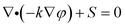, the divergence term will be integrated by parts, resulting in
(0.1) 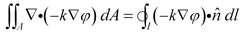
The right hand side is the heat flux crossing the outer boundary, and the value of 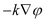 must be provided by the user in a Natural boundary condition statement (unless a value BC is applied instead).
At an interface between two materials,  represents the heat energy leaving material 1 at a point on the interface. Likewise, 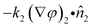 represents the heat energy leaving material 2 at the same point. Since the outward normal from material 1 is the negative of the outward normal from material 2, the sum of the fluxes at the boundary is 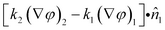, and this becomes the Natural boundary condition at the interface. In this application, we want energy to be conserved, so that the two flux terms must sum to zero. Thus the internal Natural BC is zero at the interface, and this is the default value applied by FlexPDE.
represents the heat energy leaving material 1 at a point on the interface. Likewise, 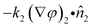 represents the heat energy leaving material 2 at the same point. Since the outward normal from material 1 is the negative of the outward normal from material 2, the sum of the fluxes at the boundary is 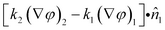, and this becomes the Natural boundary condition at the interface. In this application, we want energy to be conserved, so that the two flux terms must sum to zero. Thus the internal Natural BC is zero at the interface, and this is the default value applied by FlexPDE.
Useful Integral Rules
(0.2) 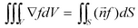 (Gradient Theorem)
(0.3) 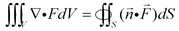 (Divergence Theorem)
(0.4) 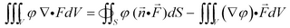
(0.5) 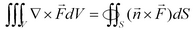 (Curl Theorem)